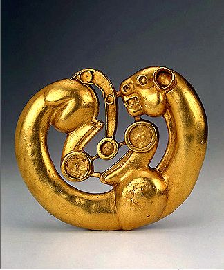

SATYA

Home
Music
Fandom
Contact
Album 1: New Beginnings
Lambodara
Lila
Edge of Chaos
Panta Rhei
Phoenix
Белые Крылья
Phoenix
Like a phoenix rising from the ashes
Of the life I used to lead
I have come full circle through the trials
That I don’t want to repeat
Having felt the power of desire
To bring change beyond control
I now realize that I’m the fire
That burns yet sustains us all
I am free
To emanate the beauty
That eludes the logos still
This is way beyond the call of beauty
I reflect the divine will
In my golden eyes you see the vastness
Of the universe within
And while she is gone, I’m everlasting
A new cycle shall begin
Russian Translation
Феникс
Я как феникс возродилась с пепла
Той жизни что я вела
Я прошла целый круг испытаний
Их не надо повторять
Ощутив всю силу моей страсти
Совершить переворот
Теперь знаю что я есть то пламя
Что жжёт но и жизнь даёт
Излучаю красоту свободно
Логосу не постигать
Моя суть выше любого долга:
Волю Бога отражать
Ты увидишь мир тот бесконечный
В золотых моих очах
И хотя она уйдёт, я вечна
Пора новый цикл начать
Credits
Lyrics: Satya
Translation: Satya
(back)
Panta Rhei
When Heraclitus was a young man
Playing asyq
By the temple of Artemis
He realized
That the world was made of
Everliving fire
He left his family in Ephesus
And traveled by foot
To explore the world
While questioning himself on his way
To eternal Truth
Panta rhei, panta rhei
Everything flows
Panta rhei, panta rhei
Everything flows
Panta rhei, panta rhei
Everything flows
Panta rhei, panta rhei
Everything flows
He witnessed tension in apparent harmony
Of opposites
That are one indeed
And that in our need for security
We wish for constancy
In sight, in deed
Yet all things scatter and come together
Approach and then recede
So it is futile to hold on to the past
And this moment will not repeat
You can’t step into the same river twice
Panta rhei, panta rhei
Everything flows
Panta rhei, panta rhei
Everything flows
Panta rhei, panta rhei
Everything flows
Panta rhei, panta rhei
Everything flows
Credits
Lyrics: Satya
(back)
Lila
Veil after veil after veil after veil
Round and round and round we go
Up and down and up and down
Left and right and upside down
Apsaras dancing in the wind
Rudra’s breath has been perceived
Birth after death after birth after death
Round and round and round we go
In and out and in and out
I’m within and I’m without
Life goes on and life goes out
It’s eternal, there’s no doubt
Wave after wave after wave after wave
Round and round and round we go
Up and down and up and down
In a spiral we go down
Then go up to see God’s face
This is our share of grace
Play after play after play after play
Round and round and round we go
Dark and light and dark and light
In their never-ending fight
It is sorrow and delight
Just accept that you are light
Veil after veil after veil after veil
Birth after death after birth after death
Wave after wave after wave after wave
Play after play after play after play
Round and round and round we go
Credits
Lyrics: Satya
(back)
Lambodara
Om
Aindu karattanai
Aanai muhattanai
Indin ilampirai pondra eyitrinai
Nandi mahandanai
Jnanakkozhundinai
Pundyil vaittadi potruhinrene
Pundyil vaittadi potruhinrene
Aindu karattanai
Aanai muhattanai
Indin ilampirai pondra eyitrinai
Nandi mahandanai
Jnanakkozhundinai
Pundyil vaittadi potruhinrene
Pundyil vaittadi potruhinrene
Lambodara
Lambo lambodara
Ekadanta
Eka ekadanta
Dvaimatura
Dvai dvaimatura
Lambodara
Lambo lambodara
Ekadanta
Eka ekadanta
Dvaimatura
Dvai dvaimatura
Aindu karattanai
Aanai muhattanai
Indin ilampirai pondra eyitrinai
Nandi mahandanai
Jnanakkozhundinai
Pundyil vaittadi potruhinrene
Pundyil vaittadi potruhinrene
Lambodara
Lambo lambodara
Ekadanta
Eka ekadanta
Dvaimatura
Dvai dvaimatura
Om gam ganapataye namaha
Om gam ganapataye namaha
Om gam ganapataye namaha
Om gam ganapataye namaha
Om
English Translation
Om
Him, who has arms five,
Whose face is that of an elephant
Whose single tusk equals the charm of the crescent moon,
Who is the offspring of the Blissful Lord,
Who is wisdom overflowing
I worship (by) keeping His feet
Inside my consciousness (mind)
Pot-bellied
With a single tusk
Son of two mothers
Salutations to the remover of obstacles
Om
Credits
Lyrics: Tirumalar (Tirumandiram), Satya
Translation: Srivatsa Ramaswami, Satya
(back)
Edge of Chaos
Somewhere at the border
Between chaos and order
You will find the answers
To all your questions, mm
While you look around
Keep your feet on the ground
Or you will burn out
Or tumble down, mm
And I’m flying, I’m flying
Above it all with you
I am laughing, I’m crying
I fell in love with you
Life is so dynamic
It evolves and it varies
It is so robust
And yet it’s fragile, mm
Lasting for a moment
In a blink we’ll be gone
Will this pattern rise
Ever again, mm?
And I’m watching, I’m watching
The sea of light with you
And the Sun is so scorching
It’s watching me and you
Are we like cellular automata
To the Gods above us?
We grow, procreate, self-annihilate
We rise and fall
We’re neither random nor regular
We are spontaneous
Drifting across the Universe
Dancing across the Universe
Flowing across the Universe
On spaceship Earth
At the edge of chaos
This is where you’ll find us
We do not abide
By your strict rules, mm
Not unless you know all
Which does mean that you are all
Thank you for this grand
Game of life, mm
And I’m swimming, I’m swimming
In the sea of life
And I’m dreaming, I’m dreaming
That I am your wife
Are we like cellular automata
To the Gods within us?
We search, we discover, we integrate
We dream and feel
We’re neither random nor regular
We are mysterious
Drifting across the Universe
Dancing across the Universe
Flowing across the Universe
On spaceship Earth
Russian Translation
Край хаоса
На границе между
Хаосом и порядком
Ты найдёшь ответы
На все твои вопросы, мм
Не теряй корней
Когда ищешь ты правду
Не то ждут тебя
Огонь или бездна, мм
Я летаю, летаю
С тобою в небесах
Я смеюсь, я рыдаю
Я влюблена в тебя
Жизнь так динамична
Развиваясь, меняясь
Она так крепка
И всё же хрупка, мм
Длясь лишь на мгновенье
Через миг мы исчезнем
Я не знаю если
Всё это повторится, мм
Мы с тобой созерцаем
Света океан
Ну а солнце всё палит
Оно смотрит на нас
Может быть мы kлеточные автоматы
Для Богов над нами?
Растя, размножаясь
Самоуничтожаясь
Чуть являсь, исчезаем
Мы на случайны и не регулярны
Мы спонтанны
Плывём мы по вселенной
Танцуем по вселенной
Течём мы по вселенной
На космолёте Земля
На краю хаоса
Вы найдёте нас там
Мы не принимаем
Ваши строгие правила, мм
Кроме как Вы всеведущи
Тогда Вы - весь этот мир
Мы благодарим Вас
За славную игру жизни, мм
И я плаваю, плаваю
В море бытия
И мне снится сон славный
Где я твоя жена
Может быть мы kлеточные автоматы
Для Богов внутри нас?
Ищя, раскрывая
Объединяя
Грезим, ощущаем
Мы на случайны и не регулярны
Мы таинственны
Плывём мы по вселенной
Танцуем по вселенной
Течём мы по вселенной
На звездолёте Земля
Credits
Lyrics: Satya
Translation: Satya
(back)
Белые Крылья
Распахнула крылья
И взлетела я в небеса
Отпустила прошлое
И жестокие голоса
И теперь всё вдруг прояснилось
И душа моя осветилась
Ведь я птица вольная
В безграничном небе
Небе
Я летаю, я летаю
И теперь не отрицаю
Свою Божественную натуру
На боюсь я тех упрёков
Что меня так утесняли
Я хочу дать без вины
И без печали
Я страдала много
Потому что не верила в себя
И не сознавала
Что мой дом - и Земля и небеса
Но любовь к тебе осветила
Жизнь мою и вновь вдохновила
Моё сердце и мои желания
Желания
Я летаю, я летаю
И теперь не отрицаю
Свою Божественную натуру
На боюсь я тех упрёков
Что меня так утесняли
Я хочу дать без вины
И без печали
English Translation
The White Wings
I spread out my white wings
And flew into the empty sky
I let go of my past
And those voices that make me wanna cry
Everything’s as clear as day
And my soul is thriving again
I’m a free bird soaring high
In the vast blue sky
Sky
I am flying, I am flying
And I’m no longer denying
The divinity that flows within me
I’m not afraid of all that chiding
That has long kept from flying
I let go of guilt and those sad feelings
I have suffered so much
Due to lack of faith in my own light
And I didn’t know that
My home is both the Earth
And the vast sky
But my love for you has inspired
My life and my deepest desires
It unleashed my vast imagination
I am flying, I am flying
And I’m no longer denying
The divinity that flows within me
I’m not afraid of those reproaches
That have long kept from flying
I let go of guilt and those sad feelings
I am flying, I am flying
I am flying
Credits
Lyrics: Satya
Translation: Satya
(back)
Fandom
Contact
Email:
satyasings@protonmail.com
Sources:
github.com/sweetsatya/satyasings.com
Welcome to my world!
image goes here
What's new?
text goes here
text goes here
text goes here